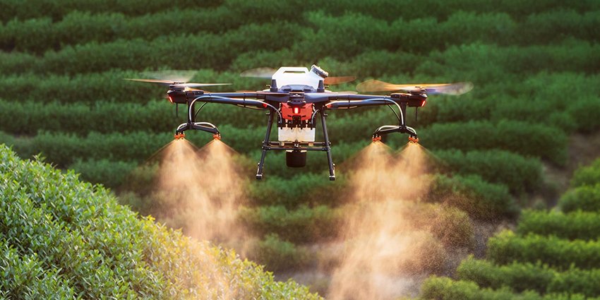

Innovación para el Futuro de la Agricultura
Explora cómo las tecnologías digitales están revolucionando el agro para hacerlo más sostenible, eficiente y rentable.
Tecnologías Clave

Drones
Optimiza el monitoreo de cultivos con imágenes aéreas y análisis en tiempo real.
IoT
Sensores inteligentes para rastrear datos sobre humedad, temperatura y fertilización...

Big Data
Analiza grandes volúmenes de datos para tomar decisiones informadas.